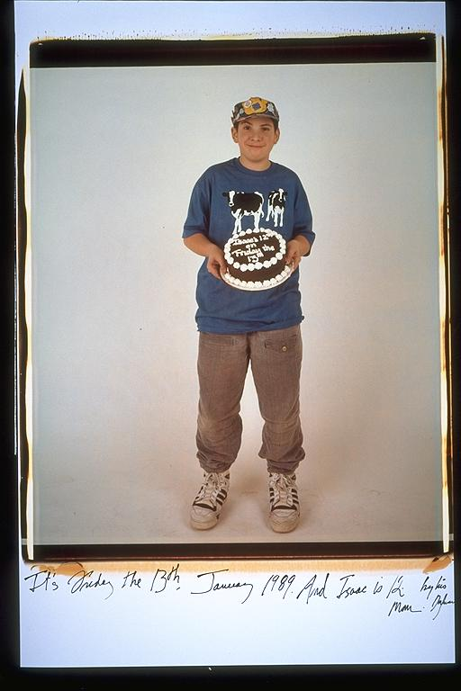

Pals: Boys Who Grew Up Together
elsadorfman.com/pals
Aldo: Isaac at twelve. That looks like a good cake he's holding there. I'm not sure I hung out with him at this age; it was right after we became friends. So, I can only imagine how lost he was before I entered his life and showed him the path of the righteous man. It's not his fault -- we can't all be perfect, but we can all try -- this is what I'm here for.

elsad@comcast.net